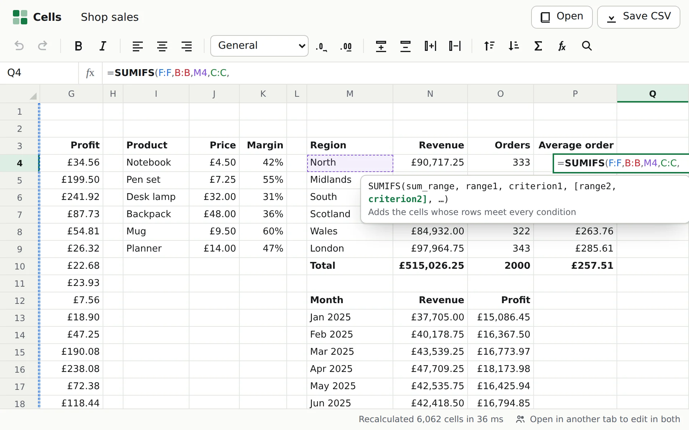

Performance · Cells
From 681 ms to 133: recalculating 200,000 formulas
Cells recalculates only what a change touches. When a change touches everything, a chain of 100,000 formulas, the first version took 681 milliseconds. Profiling showed the formulas were the cheap part. The time went on the bookkeeping around them, because of how a JavaScript engine stores large numbers.

What a recalculation does
When a cell changes, three things have to happen before anything is drawn. Find every formula downstream of it,
however indirectly. Put them in an order where each one comes after everything it reads. And notice formulas
that read their own result, which can't be put in any order and have to show #CYCLE!.
The first needs an index from cells to the formulas that read them. Cells keeps three: formulas that read one
cell, by column and then row; formulas that read a tall range, by the columns it covers; and wide ranges by their
rows. So =SUM(B:B) is one entry, not a million. A breadth-first walk of that index finds everything
downstream. The second and third are one job: in Tarjan's algorithm, a group of formulas that read each other is
a strongly connected component, and the order it finishes components in, reversed, is an order to calculate them
in. Both are written without recursion, because a chain of 100,000 formulas would overflow the call stack.
The stress example is the worst case for that: 100,000 numbers in column A, each one plus one on the cell above,
100,000 formulas in B reading them, and a SUM and a COUNT of B. Change A1 and all
200,001 formulas have to be worked out again, in order. It took 681 ms in Node, and the status
bar in headless Chromium said 857 ms. For one keystroke, that's a freeze.
Where the time went
The obvious suspect was the evaluator: walking a formula tree for each of 200,001 cells. A CPU profile of the benchmark said otherwise. The recalculation's own bookkeeping and Tarjan's algorithm took over 40% of the time, the garbage collector another 15%, and the evaluator's own code under one percent.
The bookkeeping was a handful of Maps and Sets keyed by cell: which cells have been
seen, which are dirty, each one's edges, and Tarjan's index and low-link for each. That's a dozen or so map
operations per cell, and each was slow for a reason that only shows up at this size. A cell key is one number:
// src/engine/address.ts
export const cellKey = (row: number, col: number) => row * MAX_COLS + col; // MAX_COLS is 16,384V8 keeps small integers inside the pointer itself, with no allocation. On a 64-bit Chrome that's up to about a billion. Past row 65,536, a cell key is bigger than that, so it lives on the heap as a boxed number. Every map lookup has to hash it as a number rather than an integer, and passing it around makes garbage. The bottom two-thirds of the stress sheet is past row 65,536.
Fix one: number the cells, then use typed arrays
The graph only exists for the length of one recalculation, so its cells don't need their real addresses inside
it. As the walk finds each cell, it gets the next small number, 0, 1, 2 and so on, and its edges go into one flat
list. Tarjan's algorithm then runs on Int32Arrays indexed by those numbers, with no maps at all:
// src/engine/sheet.ts
// edges[first[v]] up to edges[first[v + 1]]: the formulas that read cell v
while (depth >= 0) {
const v = work[depth]!;
const e = at[depth]!;
if (e < first[v + 1]!) {
at[depth] = e + 1;
const w = edges[e]!;
if (w === v) cyclic[v] = 1; // a formula that reads itself
if (index[w] === -1) {
index[w] = low[w] = counter++;
stack[top++] = w;
onStack[w] = 1;
depth++;
work[depth] = w;
at[depth] = first[w]!;
} else if (onStack[w] && index[w]! < low[v]!) low[v] = index[w]!;
continue;
}
// v is done: pass its low-link up, and emit its group if it heads one
}That took the chain from 681 ms to 393 ms.
Fix two: keep the marks on the formulas
One map was left: the one that numbers the cells as the walk finds them, looked up once for every edge to ask "have I seen this one?" Formulas are objects, so the answer can live on the formula. Each recalculation has a pass number, and a formula stamped with the current one has been reached already:
// src/engine/sheet.ts
const reach = (cell: Cell): number => {
const f = cell.formula!;
if (f.mark === pass) return f.slot; // already reached in this recalculation
f.mark = pass;
f.slot = keys.length;
keys.push(f.key);
cells.push(cell);
return f.slot;
};That still needed the formula's cell, and finding it meant two more lookups by column and row. So the dependency index stopped holding the keys of the formulas that read a cell and started holding the cells themselves. Following an edge became reading a field. Together these took it from 393 ms to 133 ms.
The same idea fixed the sums. SUM(B:B) walked column B's rows in order and looked each cell up in a
map, 100,000 lookups per sum. Each column now keeps its cells in an array in row order, beside the sorted rows
it already had, rebuilt only when rows are added in bulk. A change at the end of the chain, which recalculates
only the formula beside it, the SUM and the COUNT, went from 31 ms to 7 ms.
- 681 → 133 ms200,001 cells recalculated, in Node
- 857 → 94 msthe same, in headless Chromium
- 31 → 7 msa change at the end of the chain
- 209unit tests, passing after every step
Changing the engine without breaking it
Rewriting the heart of a recalculation engine three times in an afternoon is only safe with a test that would
catch a wrong answer anywhere. Cells has one. fast-check makes up random
sequences of edits on a small sheet: numbers, blanks, and formulas with arithmetic, SUM,
COUNT, IF and IFERROR over random references, cycles included. After every
edit, every cell must equal what a deliberately naive evaluator says: one that recurses from scratch with no graph,
no order and no caching. It was checked by breaking the engine on purpose to see it fail. It and the other 208
tests passed after each change above.
What is left
At 133 ms, finding the 200,001 cells takes about 80 and calculating them about 50. What remains in the walk is one map lookup per cell, for the cells that read it. Each costs around 200 nanoseconds on maps of 100,000 entries, because each one misses the processor's cache. Getting past that means storing the sheet differently, in typed columns rather than maps, which a spreadsheet of this size doesn't yet need. Opening the stress sheet (0.93 s) and inserting a row at its top (1.26 s) are now the slow parts, and both are parsing: every formula's text is read again.
What I took from it
- Profile before guessing. The evaluator was the obvious culprit and it was under one percent. The cost was in code that looked too simple to be slow.
- Know what the runtime does with your data. Nothing in the source says "past row 65,536 this
gets slower". The same
Mapwith smaller keys would have been fine, which is why the problem only showed at full size. - Temporary structures don't need permanent names. Numbering the cells of one pass 0, 1, 2… turned every lookup into an array index.
- A good oracle makes bold changes cheap. The property test is what let the engine be rewritten three times without fear.